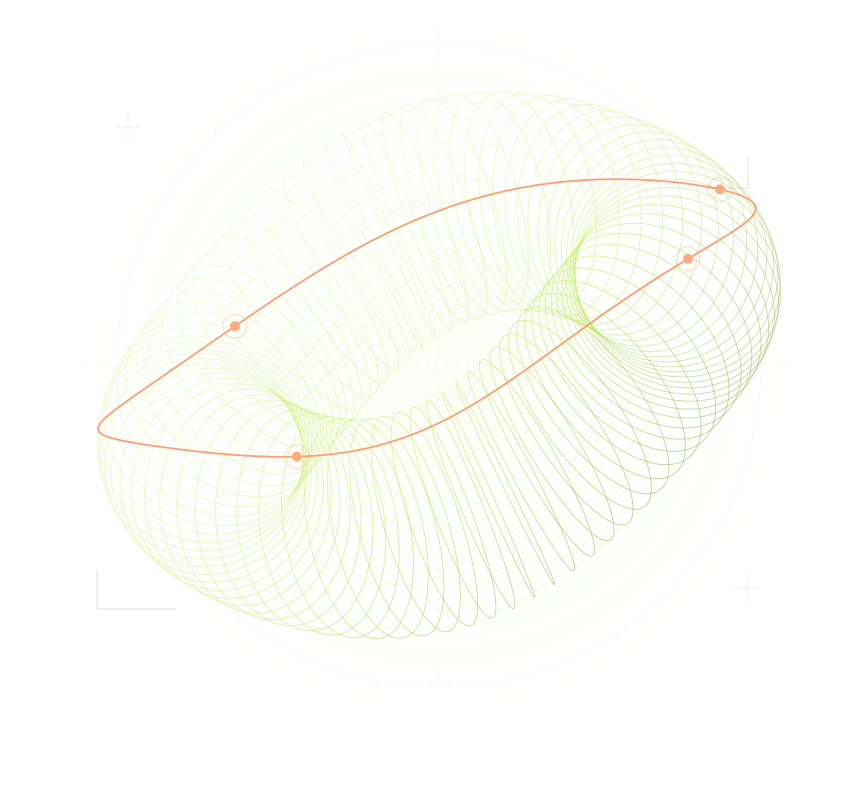

{% assign profile = site.data.profile %}
<main id="main">
  <section class="hero container" id="top" aria-labelledby="name">
    <div class="hero-kicker"><p><span class="status-dot" aria-hidden="true"></span>{{ profile.person.eyebrow | escape }}</p><span class="edition">PERSONAL RESEARCH INDEX / 01</span></div>
    <div class="hero-copy">
      <h1 id="name">{{ profile.person.name | escape }}<span class="name-dot">.</span></h1>
      <p class="hero-statement">{% for line in profile.person.headline_lines %}<span{% if forloop.last %} class="statement-accent"{% endif %}>{{ line | escape }}</span>{% endfor %}</p>
      <p class="hero-description">{{ profile.person.summary | escape }}</p>
      <div class="hero-actions"><a class="button button-primary" href="#research">Explore my research <span aria-hidden="true">↗</span></a><a class="quiet-link" href="#about">A little about me <span aria-hidden="true">↓</span></a></div>
    </div>
    <figure class="neural-field"><div class="field-label field-label-top"><span class="crosshair" aria-hidden="true">＋</span> SIGNAL / POSSIBILITY</div><div class="field-label field-label-bottom"><span class="status-dot" aria-hidden="true"></span> BRAIN → INTERFACE → ACTION</div><figcaption>Conceptual signal geometry · not recorded EEG</figcaption></figure>
    <div class="hero-bottom"><p>{{ profile.person.status | escape }}<span aria-hidden="true"> / </span>{{ profile.person.institution | escape }}</p><p>Brain–computer interfaces. Human possibilities.</p><a href="#about" aria-label="Scroll to About"><span aria-hidden="true">↓</span></a></div>
  </section>

  <section class="about-section" id="about" aria-labelledby="about-heading">
    <div class="container about-grid">
      <div class="section-marker"><span>01 / THE PERSON</span><h2 id="about-heading">A mind for<br> <em>possibility.</em></h2></div>
      <div class="about-copy"><p class="large-copy">I’m {{ profile.person.name | escape }}, a researcher exploring the connection between <span>the brain and the world.</span></p><p>I am enrolled in the {{ profile.person.status | escape }} in {{ profile.person.field | escape }} at {{ profile.person.institution | escape }}, working in the <a href="{{ profile.affiliation.lab_url | escape }}">{{ profile.affiliation.lab_lines | join: ' ' | escape }}</a>.</p><p>{{ profile.affiliation.advisor | escape }}.</p><div class="about-facts"><div><span class="micro-label">APPROACH</span><p>From engineering<br>to brain science.</p></div><div><span class="micro-label">RESEARCH HOME</span><p><a href="{{ profile.affiliation.department_url | escape }}">{{ profile.affiliation.department_lines | join: ' ' | escape }} <span aria-hidden="true">↗</span></a></p></div></div><a class="text-link" href="#background">Explore my background <span aria-hidden="true">↘</span></a></div>
      <figure class="portrait-card"><div class="portrait-crop"></div><figcaption><span>{{ profile.person.name | escape }}</span><span>{{ profile.person.institution | escape }} <span aria-hidden="true">↗</span></span></figcaption><span class="portrait-sticker" aria-hidden="true">Hello<br>there. ↗</span></figure>
    </div>
  </section>

  <section class="research-section container section-space" id="research" aria-labelledby="research-heading">
    <div class="section-heading"><div class="section-marker"><span>02 / RESEARCH DIRECTIONS</span><h2 id="research-heading">Signals into<br><em>something useful.</em></h2></div><p class="section-intro">{{ profile.research.introduction | escape }}</p></div>
    <div class="research-list">
      {% for theme in profile.research.themes %}
      <details class="research-item"{% if forloop.first %} open{% endif %}>
        <summary><span class="research-index">0{{ forloop.index }}</span><h3>{{ theme.title_lines | join: ' ' | escape }}</h3><span class="expand-symbol" aria-hidden="true">＋</span></summary>
        <div class="research-detail"><span class="micro-label">{{ theme.label | escape }}</span><p>{{ theme.description | escape }}</p><div class="mini-signal" data-signal="{{ forloop.index }}" aria-hidden="true"><svg viewBox="0 0 320 64"><path class="signal-baseline" d="M0 32H320"/><path class="signal-trace" d="M0 32h28l8-3 7 8 6-16 7 24 7-18 7 5h18l7-4 8 8 9-24 8 44 9-32 9 8h18l7-4 8 11 8-23 8 30 8-22 8 8h22l8-4 8 9 8-16 8 18 8-7h37"/></svg></div></div>
      </details>
      {% endfor %}
    </div>
  </section>

  <section class="publications-section" id="publications" aria-labelledby="publications-heading">
    <div class="container section-space">
      <div class="section-heading"><div class="section-marker"><span>03 / PUBLICATIONS</span><h2 id="publications-heading">Research,<br><em>on the record.</em></h2></div><p class="section-intro">A closer look at the work.</p></div>
      {% for publication in profile.publications %}
      <article class="publication"><div class="paper-meta"><span class="paper-index">0{{ forloop.index }}</span><div><span class="paper-type">{{ publication.type | escape }}</span><time datetime="{{ publication.year | escape }}">{{ publication.year | escape }}</time></div><span class="paper-motif" aria-hidden="true">↗</span></div><div class="paper-body"><h3><a href="{{ publication.url | escape }}">{{ publication.title | escape }}</a></h3><p class="authors">{% for author in publication.authors %}{% if author == profile.person.name %}<strong>{{ author | escape }}</strong>{% else %}{{ author | escape }}{% endif %}{% unless forloop.last %}, {% endunless %}{% endfor %}</p><p class="venue">{{ publication.venue | escape }}</p><div class="paper-actions"><a class="button button-outline" href="{{ publication.url | escape }}">Read paper <span aria-hidden="true">↗</span></a><button class="copy-citation quiet-link js-only" type="button">Copy citation <span aria-hidden="true">⧉</span></button></div><p class="citation-source" hidden>{% for author in publication.authors %}{{ author | escape }}{% unless forloop.last %}, {% endunless %}{% endfor %}. ({{ publication.year | escape }}). {{ publication.title | escape }}. {{ publication.venue | escape }} {{ publication.url | escape }}</p></div></article>
      {% endfor %}
    </div>
  </section>

  <section class="background-section container section-space" id="background" aria-labelledby="background-heading">
    <div class="section-heading"><div class="section-marker"><span>04 / THE PATH SO FAR</span><h2 id="background-heading">Always<br><em>connecting dots.</em></h2></div><div class="background-tools"><p class="section-intro">Engineering, brain science, and the people along the way.</p><button class="text-link print-profile js-only" type="button">Print / save profile as PDF <span aria-hidden="true">↗</span></button></div></div>
    <div class="background-layout"><nav class="background-nav" aria-label="Background sections">{% for group in profile.background %}<a href="#{{ group.id | escape }}"><span>0{{ forloop.index }}</span>{{ group.navigation_label | escape }}<span aria-hidden="true">↗</span></a>{% endfor %}</nav><div class="background-groups">
      {% for group in profile.background %}
      <details class="background-group" id="{{ group.id | escape }}"{% if group.id == "education" or group.id == "experience" %} open{% endif %}><summary><h3>{{ group.label | escape }}</h3><span class="expand-symbol" aria-hidden="true">＋</span></summary><div class="timeline">
        {% for entry in group.entries %}
        <article class="timeline-item"><p class="dates">{% for period in entry.dates %}<span>{{ period | escape }}</span>{% endfor %}</p><div><h4>{{ entry.title | escape }}</h4>{% if entry.role and entry.role != "" %}<p class="role">{{ entry.role | escape }}</p>{% endif %}{% for detail in entry.details %}<p class="entry-detail">{{ detail | escape | newline_to_br }}</p>{% endfor %}{% if entry.bullets and entry.bullets.size > 0 %}<ul>{% for bullet in entry.bullets %}<li>{{ bullet | escape }}</li>{% endfor %}</ul>{% endif %}</div></article>
        {% endfor %}
      </div></details>
      {% endfor %}
    </div></div>
  </section>

  <section class="beyond-section" aria-labelledby="beyond-heading"><div class="container beyond-grid"><div><span class="micro-label">05 / BEYOND THE LAB</span><h2 id="beyond-heading">A different<br> kind of <em>teamwork.</em></h2></div><div class="beyond-copy">{% for group in profile.background %}{% if group.id == "leadership" %}{% for entry in group.entries %}<p class="beyond-title">{{ entry.title | escape }}</p><p>{{ entry.role | escape }} · {% for period in entry.dates %}{{ period | escape }}{% unless forloop.last %}; {% endunless %}{% endfor %}</p>{% for detail in entry.details %}<p>{{ detail | escape }}</p>{% endfor %}{% endfor %}{% endif %}{% endfor %}<a class="text-link" href="#outreach">Teaching, mentoring & outreach <span aria-hidden="true">↗</span></a></div><svg class="court-art" viewBox="0 0 290 190" aria-hidden="true"><rect x="1" y="1" width="288" height="188"/><path d="M145 1v188M1 39h56v112H1m288-112h-56v112h56M1 12a83 83 0 0 1 0 166m288-166a83 83 0 0 0 0 166"/><circle cx="145" cy="95" r="30"/><circle class="court-ball" cx="177" cy="68" r="12"/><path class="court-ball" d="M166 65l22 6m-13-14 4 23"/></svg></div></section>

  <section class="contact-section" id="contact" aria-labelledby="contact-heading"><div class="container"><div class="contact-top"><span class="micro-label">06 / OPEN A CONVERSATION</span><span aria-hidden="true">↗</span></div><h2 id="contact-heading">Let’s connect<br> the <em>dots.</em></h2><div class="contact-bottom"><div><p>Research, ideas, and possibilities.</p><a class="contact-email" href="mailto:{{ profile.contact.email | escape }}">{{ profile.contact.email | escape }} <span aria-hidden="true">↗</span></a></div><div class="contact-links">{% for link in profile.contact.links %}<a href="{{ link.url | escape }}">{{ link.label | escape }} <span aria-hidden="true">↗</span></a>{% endfor %}</div></div></div></section>
</main>
